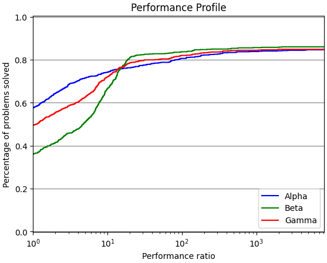

Welcome to perprof-py’s documentation¶
perprof-py is a free/open source Python module for performance profiling (as described by Dolan and Moré), such as the one below:

For more details, you can check our reference:
Siqueira, A. S., Costa da Silva, R. G. and Santos, L.-R., (2016). Perprof-py: A Python Package for Performance Profile of Mathematical Optimization Software. Journal of Open Research Software. 4(1), p.e12. DOI: 10.5334/jors.81.
Please cite us using the reference above if you use our software.